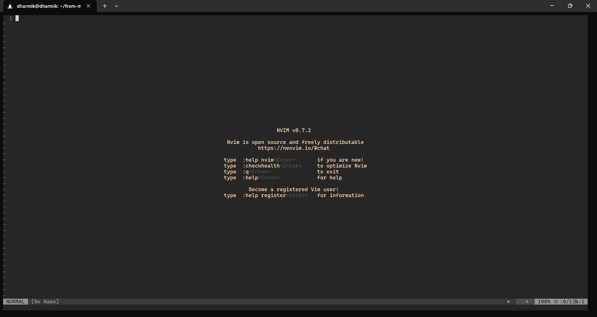

dt: 22/09/2024
My .vim config
TL;DR: Here's the link to my Vim config file.
It's pretty basic. If you want to see how it came together, then keep reading.

I recently had the inner urge to try Vim. I settled on Neovim. I had no interest in the Lua capabilities, nor do I
have any yet. I know I will tinker with it in the future, but for now I just went with Neovim because, first of all, my main laptop is Windows, so whatever I chose, I
had to install it. It didn't come
preinstalled like
it does with macOS and Linux.
I love this quote from the Unix StackExchange,
This makes emacs in effect an immigrant from a very different culture, while vi is a native.
Well, let's start from the beginning. I installed Pop!_OS on my brother's machine. I'd been reading about Pop!_OS
for a long time, but it wasn't until I saw Karan had Pop!_OS installed on one of his machines that I was convinced.
Later, probably a month ago, I switched my personal computer to Pop!_OS. Using Linux on my computer made
me appreciate FOSS more and more.
My introduction to Vim for the first time was in 11th grade. I also took my practical exams, which, from what I
can remember, involved doing 10 things in Vim. After that, I just knew about Vim's existence and used it on and off
very occasionally. Up until this month, I decided to pick it up seriously. The people I follow on the
now-soon-to-be-sunsetted emacs.ch and my new favorite fosstodon.org also
played a role. I then browsed through a few Vim tutorials and got started with it.
I installed Neovim on my laptop, which is still running Windows. I used vanilla Neovim for a day or two without any plugins. I later
realized that having a complete plugin system on Windows would require too many unresolved changes. I then decided to go for WSL.
WSL stands for Windows Subsystem for Linux. It allows a Windows computer to run a Linux environment without the need for a separate virtual
machine. Among all the available options, I narrowed it down to either Debian or Ubuntu. I finally chose Debian because I already had
experience with Pop!_OS. I mean, Debian is the base. Installing WSL2 was much easier than I had anticipated.
It just took the following command in PowerShell:
wsl --install -d Debian
And voila! I later installed the Debian app from the Windows Store, which wasn't necessary.
A guide to my setup
First of all, I don't prefer line numbering to be relative. The plugins I currently use are:
- nerdtree
- vim-airline
- surround.vim
- vim-devicons
- vim-css-color
- awesome-vim-colorschemes
- YouCompleteMe (earlier, I settled on this for code completion when I could not manage to make Conquer of Completion work.)
- now, coc.nvim
Firstly, I use the Vim Plug plugin manager. Setting up Vim Plug is easy too. Just run the shell command from their GitHub (I also feel uneasy copying the command and running it on my machine, but I had to trust the devs for this one).
I expect you are familiar with :PlugInstall to install the plugins in the .vim file and :PlugClean to remove the plugins. Once, on my fresh WSL install, I messed with the .gitconfig file, which was giving me errors when cloning. I removed and then reinstalled Git, and that solved the problem.
Code completion was a tough issue. I didn't want to deal with Node.js slop (also because I couldn't make it work with npm when I tried), so I settled on using YouCompleteMe. The catch with YouCompleteMe is that it has to be compiled with Clang. I followed the README. I mean, if the README helped, then the folks building it surely knew what they were doing. Props to them for that.
After a few hours of using it, I realized I had just tried npm to build CoC.nvim. I could also try it with Yarn to see if it worked. So I started again to make CoC.nvim work, this time with yarn build, and magically, this time it did. I found another Stack Overflow answer that failed with yarn, so they were trying npm and found success.
Doing this wasn't the complete solution, but it was close. In case anyone has trouble dealing with code completions using Neovim and stumbles upon this text in the future, I hope it's helpful.
Later, I just had to install pip, the Python package manager. It went well, but installing Jedi through pip3 gave me an error.
error: externally-managed-environment
× This environment is externally managed
╰─> To install Python packages system-wide, try apt install
python3-xyz, where xyz is the package you are trying to
install.
If you wish to install a non-Debian-packaged Python package,
create a virtual environment using python3 -m venv path/to/venv.
Then use path/to/venv/bin/python and path/to/venv/bin/pip. Make
sure you have python3-full installed.
If you wish to install a non-Debian packaged Python application,
it may be easiest to use pipx install xyz, which will manage a
virtual environment for you. Make sure you have pipx installed.
See /usr/share/doc/python3.11/README.venv for more information.
note: If you believe this is a mistake, please contact your Python installation or OS distribution provider.
You can override this, at the risk of breaking your Python installation or OS, by passing --break-system-packages.
hint: See PEP 668 for the detailed specification.
You can refer to this Stack Exchange answer for the error message. So, as instructed in the error message, I went with
sudo apt install python3-jedi
The last thing to do was to run the following command in init.vim to install the Python extension:
:CocInstall coc-python
And voila, you have code completion set up for Python. The CoC documentation is also very descriptive, so check it out.
If you want any help setting up your Neovim and think I can help, feel free to email me at dharmiik [at] proton [dot] me. For faster responses, if you are on the fediverse, I suggest pinging me at [at] dharmik [at] fosstodon [dot] org.